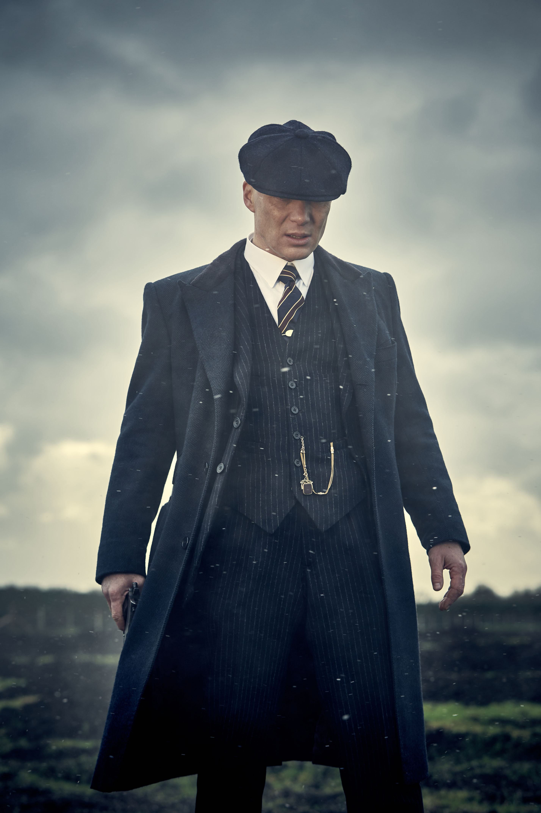
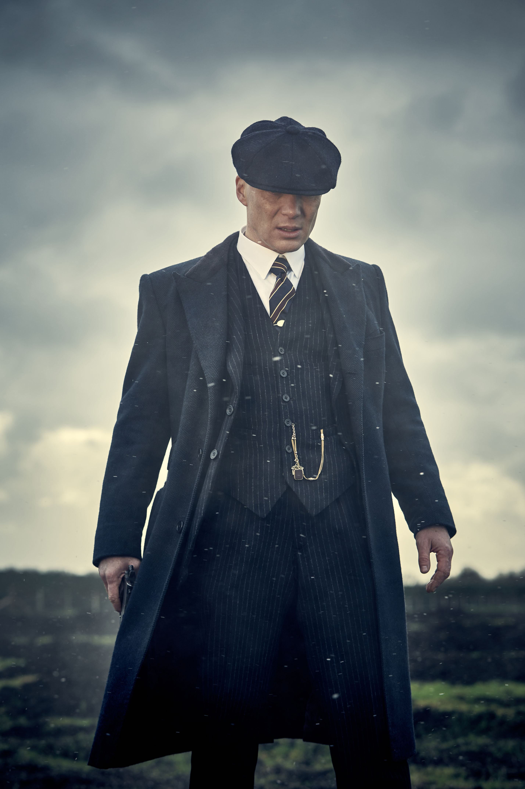

ABOUT ME
Developer & Network Specialist
I am Thomas Michael ‘Tommy’ Shelby is the son of Arthur and Mrs Shelby, brother of Arthur, John, Ada and Finn Shelby, father of Charles and Ruby Shelby, as well as being the husband of Grace and Lizzie Shelby. He is the leader of the Birmingham criminal gang, the Peaky Blinders and the patriarch of the Shelby Family.